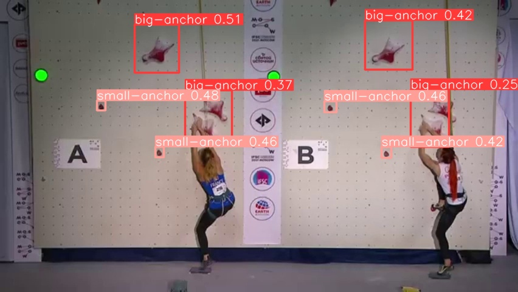

Computer Vision
Olympic Speed Climbing Analysis
Applying computer vision to speed climbing footage to support the study of athlete performance.

Project overview
Speed climbing compresses a complex sequence of movements into a short performance. Video provides a record of that movement, but studying it requires extracting useful information from individual frames. This project brings computer vision into the analysis of Olympic speed climbing.
Approach
The work uses image processing and object detection to help interpret climbing imagery. The annotated wall image illustrates how visible features can be identified and represented explicitly, providing reference points for examining a climb and connecting visual observations with performance analysis.
Research context
The project combines interests in robotics, computer vision, and human movement. Its central question is how visual data can support a more systematic understanding of athletic performance. The associated lab website provides more context on the broader research environment.